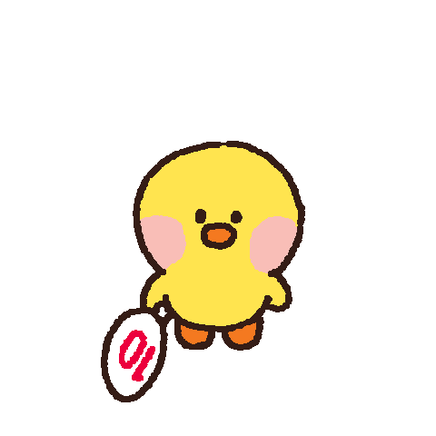
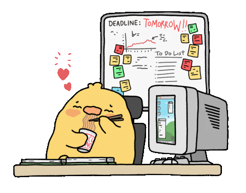
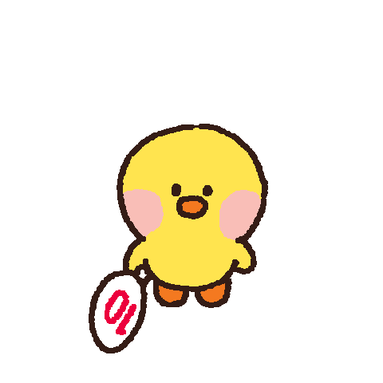
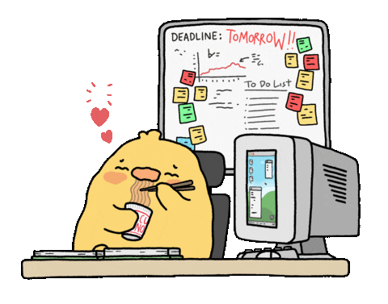
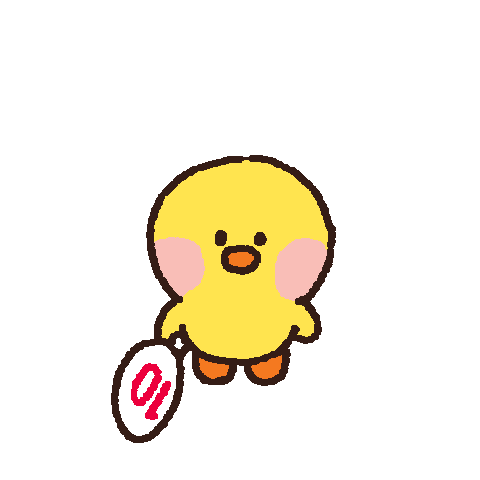
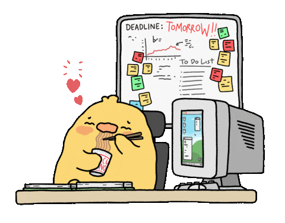
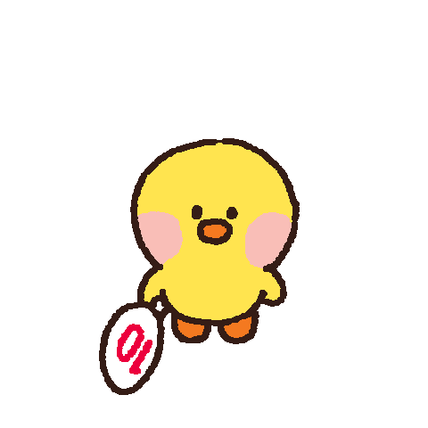
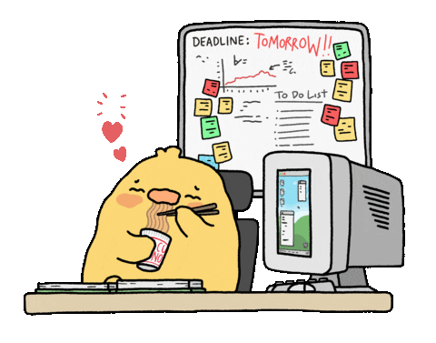

Soru 1: Menemen soğanlı mı olur, soğansız mı?
Soru 2: Ronaldo mu, Messi mi?
Soru 3: Eğer süper gücün olsaydı, hangisini seçerdin?
Soru 4: Hangi Fatih Terim sözü sizi anlatıyor?
Soru 5: Köfteci Yusuf'a komplo mu kuruldu?
Soru 6: Sorular hoşunuza gitti mi?
 






